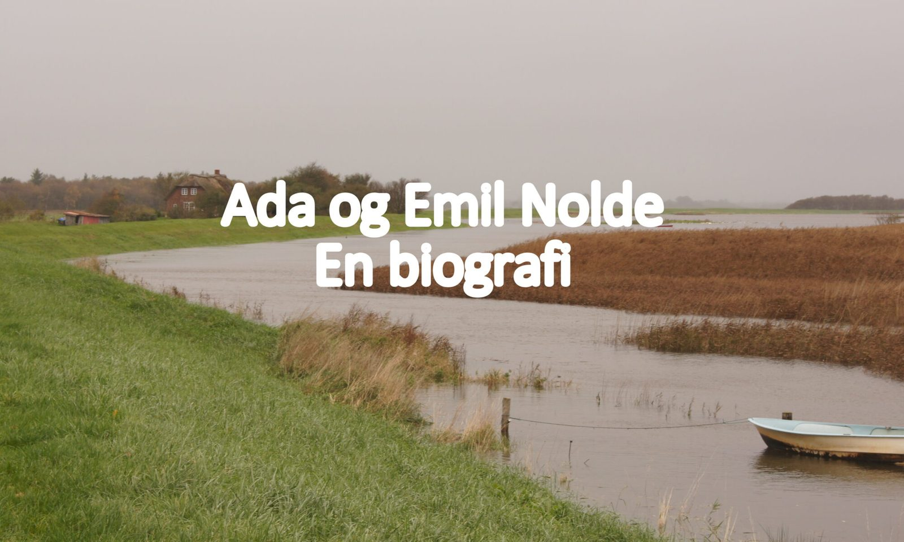

Om biografien
Noldes fire selvbiografiske værker i forskellige udgaver, adskillige bøger om Nolde, et hav af kataloger i forbindelse med Nolde-udstillinger, udgivelser om malere i kredsen omkring Nolde, breve på Det Kongelige Bibliotek i København og Universitetsbiblioteket i Hamborg, flere bind med Nolde og Adas øvrige korrespondance, avisartikler, historiske artikler, sædeskildringer, romaner, taler, essay, internetartikler, tids- og årsskrifter er grundlaget for denne den mest omfattende og gennemresearchede biografi om Emil Nolde og hans kone Ada på dansk.
Indtil nu har mit manus til biografien været omkring to velrenommerede danske forlag. På begge forlag var man interesseret, både fordi det var interessant og velskrevet, og fordi det var originalt og vel præsenteret. Men i sidste ende var der desværre ingen af de to forlag, der turde binde an med en udgivelse.
Derfor har jeg nu besluttet mig for selv at gøre biografien tilgængelig. Bogen kan købes direkte hos mig – se Køb bogen. Måske kan den være til glæde og gavn for nogen. Det ville være en stor glæde for mig, som har været engageret i Nolde og hans liv i snart 10 år.
PS: Da Nolde-Stiftung stadig har ophavsret på alle billeder af Emil Nolde, har det desværre ikke været muligt at illustrere biografien med billeder af Nolde. Mange af billederne ligger alligevel på nettet, og man kan uden problemer søge dem frem. Ved de vigtigste billeder har jeg i fodnoten noteret billedernes tyske navn med rødt, så det således skulle være enkelt at finde frem til dem.
Allan Jensen
© 2019 Allan Jensen. Biografien er udgivet under Creative Commons-licensen CC BY-NC-SA 4.0. Du må gerne dele og bearbejde den, så længe du krediterer forfatteren, ikke bruger den kommercielt og deler den på samme vilkår.